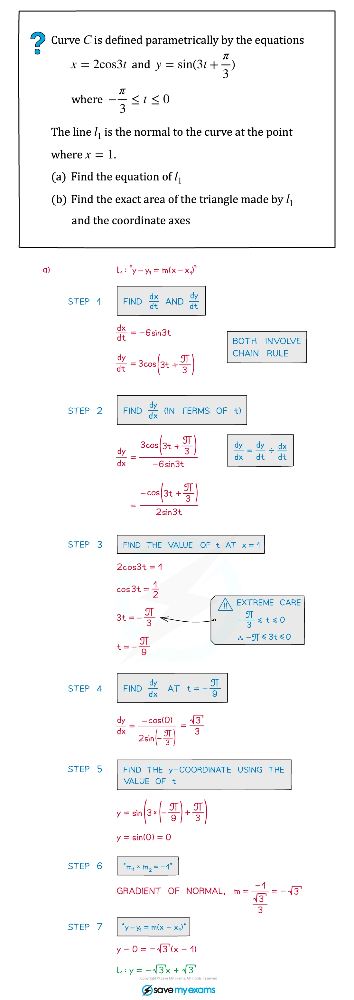
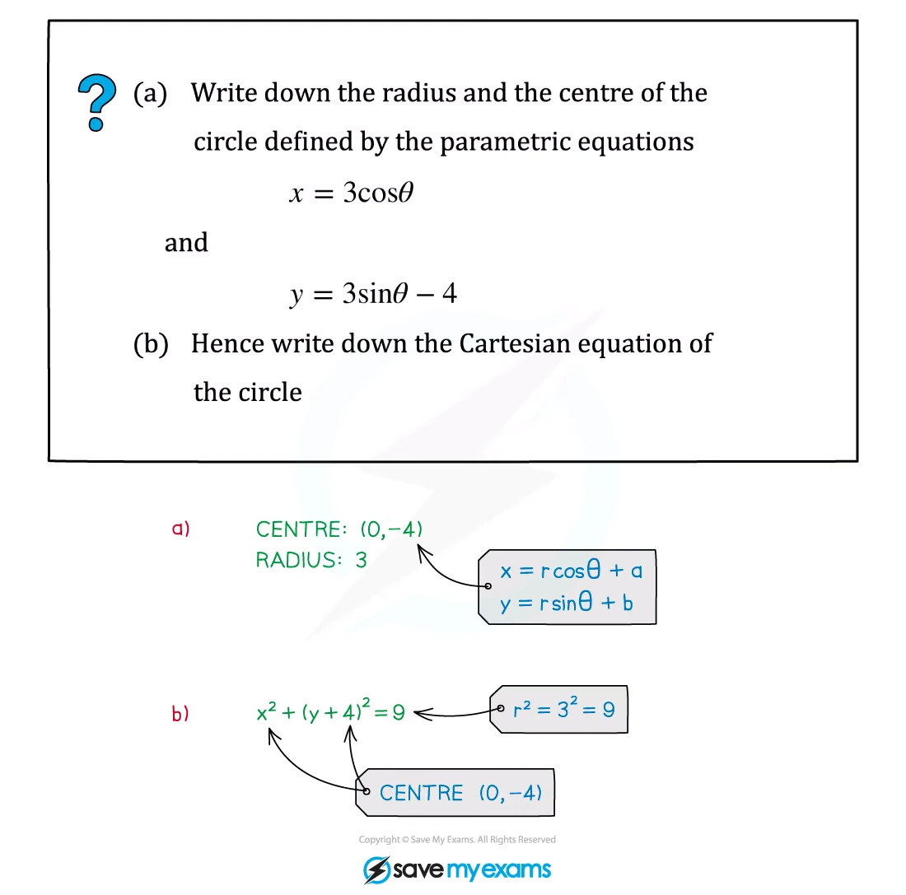
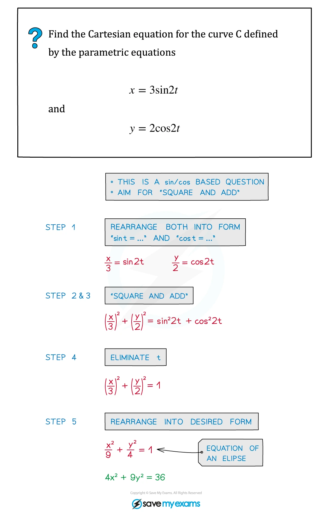

4. Differentiation
Derivative rules · tangents and normals · stationary points · implicit and parametric differentiation
本页依据 9709 Mathematics 2026–2027 syllabus 3.4，覆盖：
- e^x、\ln x、\sin x、\cos x、\tan x、\tan^{-1}x 的 derivatives；
- constant multiples、sums、differences 和 composite functions；
- product rule 与 quotient rule；
- parametric differentiation 与 implicit differentiation；
- gradients、tangents、normals、stationary points 以及 connected rates of change。
本章不要求 \sin^{-1}x 和 \cos^{-1}x 的 derivatives；syllabus 也不要求用 inflection points 作为本章的必考内容。
Learning objectives
1. Basic derivative rules
Core rules
\frac{d}{dx}(x^n)=nx^{n-1},\qquad \frac{d}{dx}(e^x)=e^x,\qquad \frac{d}{dx}(\ln x)=\frac1x.
\frac{d}{dx}(\sin x)=\cos x,\qquad \frac{d}{dx}(\cos x)=-\sin x,\qquad \frac{d}{dx}(\tan x)=\sec^2x,
\frac{d}{dx}(\tan^{-1}x)=\frac1{1+x^2}.
Chain rule
若 y=f(g(x))，则
\frac{dy}{dx}=f'(g(x))g'(x).
常见形式：
\frac{d}{dx}e^{g(x)}=e^{g(x)}g'(x), \quad \frac{d}{dx}\ln(g(x))=\frac{g'(x)}{g(x)},
\frac{d}{dx}\sin(g(x))=\cos(g(x))g'(x), \quad \frac{d}{dx}\cos(g(x))=-\sin(g(x))g'(x).
看到 \ln(ax) 时，导数是 1/x；更一般地，d[\ln(g(x))]/dx=g'(x)/g(x)。
Worked example · 笔记第 5 页

2. Product rule and quotient rule
Product rule
若 y=uv，则
\frac{dy}{dx}=u\frac{dv}{dx}+v\frac{du}{dx}.
记忆顺序：first function × derivative of second + second function × derivative of first。
Quotient rule
若 y=u/v，则
\frac{dy}{dx}=\frac{v\,du/dx-u\,dv/dx}{v^2}.
除非先明显简化，否则不要把 quotient 当成两个函数分别求导再相除。
Worked example · 笔记第 8 页

Worked example · 笔记第 12 页

3. Tangents, normals and rates of change
Gradient and line equations
在点 (x_1,y_1) 处，曲线的 tangent gradient 是
m_{\mathrm{tan}}=\left.\frac{dy}{dx}\right|_{(x_1,y_1)}.
所以 tangent equation 为
y-y_1=m_{\mathrm{tan}}(x-x_1).
若 tangent gradient 非零，normal gradient 为
m_{\mathrm{normal}}=-\frac1{m_{\mathrm{tan}}}.
若 tangent 平行于 x-axis，则 dy/dx=0；若 tangent 平行于 y-axis，则 dx/dy=0，也就是 dy/dx 的 denominator 为零而 numerator 不为零。
Worked example · 笔记第 17 页

Worked example · 笔记第 36 页

4. Stationary points and connected rates
Stationary points
stationary point 满足
\frac{dy}{dx}=0.
找到候选点后，可用 second derivative：
\frac{d^2y}{dx^2}<0\Rightarrow\text{local maximum}, \qquad \frac{d^2y}{dx^2}>0\Rightarrow\text{local minimum}.
也可以检查 dy/dx 在该点两侧的 sign change。不要把 curve 的 domain 中不存在的点当作 stationary point，例如 denominator 为零的点。
Worked example · 笔记第 31 页

Worked example · 笔记第 37 页

Connected rates of change
如果变量由另一个变量 t 连接，例如圆的 radius 随时间变化，则对关系式关于 t 求导：
\frac{dA}{dt}=\frac{dA}{dr}\frac{dr}{dt}.
关键是保留每个变量对同一个 independent variable 的 derivative，并在最后一步才代入指定数值。
Worked application · 笔记第 41–42 页


5. Implicit differentiation
Treat y as a function of x
implicit equation 中，y 不是 constant：
\frac{d}{dx}(y^n)=ny^{n-1}\frac{dy}{dx}, \qquad \frac{d}{dx}(\ln y)=\frac1y\frac{dy}{dx}.
例如对 xy 求导要使用 product rule：
\frac{d}{dx}(xy)=y+x\frac{dy}{dx}.
最后把所有含 dy/dx 的项移到一边，再 factorise 出 dy/dx。
Worked example · 笔记第 17 页
6. Parametric differentiation
The parametric derivative
若
x=f(t),\qquad y=g(t),
且 dx/dt\ne0，则
\frac{dy}{dx}=\frac{dy/dt}{dx/dt}.
stationary point 要求 dy/dt=0 且 dx/dt\ne0；vertical tangent 通常对应 dx/dt=0 且 dy/dt\ne0。
Worked example · 笔记第 21 页

Worked example · 笔记第 26 页

Worked example · 笔记第 35 页

7. Paper 3 past-paper questions
本节精选 20 道 2020–2024 Paper 3 Differentiation 题目。题目保留原题的函数、区间和精度要求；答案按 matching mark scheme 展开，并补充 domain、stationary-point 条件和 tangent / normal 的检查。
Derivative rules and stationary points
Example 1 · Exponential-trigonometric stationary point · 9709/31/M/J/20 Q4
product rulestationary point
The curve with equation y=e^{2x}(\sin x+3\cos x) has a stationary point in the interval 0\le x\le\pi.
Find the x-coordinate of this point, giving your answer correct to 2 decimal places.
Determine whether the stationary point is a maximum or a minimum. [6]
Show detailed mark scheme answer
用 product rule：
\frac{dy}{dx}=e^{2x}\left[2(\sin x+3\cos x)+(\cos x-3\sin x)\right] =e^{2x}(7\cos x-\sin x).
因为 e^{2x}>0，stationary condition 为
7\cos x-\sin x=0 \Longrightarrow \tan x=7.
在 0\le x\le\pi 内只有
x=\tan^{-1}7=1.4289...,
所以 \boxed{x=1.43}。
再求 second derivative：
\frac{d^2y}{dx^2}=e^{2x}(50\cos x-16\sin x).
在 \tan x=7 处，\cos x>0 且 \sin x=7\cos x，所以
\frac{d^2y}{dx^2}=e^{2x}(50-112)\cos x<0.
因此该 stationary point 是 \boxed{\text{a maximum}}。PastPaper/2020/2020/9709-s20-qp-31.pdf and matching mark scheme.
Example 2 · Trigonometric stationary point · 9709/32/M/J/20 Q4
product ruletrigonometry
A curve has equation y=\cos x\sin2x.
Find the x-coordinate of the stationary point in the interval 0<x<\frac12\pi, giving your answer correct to 3 significant figures. [6]
Show detailed mark scheme answer
先用 product rule：
\frac{dy}{dx}=-\sin x\sin2x+2\cos x\cos2x.
也可以先写成
y=\frac12(\sin3x+\sin x),
所以
\frac{dy}{dx}=\frac12(3\cos3x+\cos x).
令 c=\cos x，并使用 \cos3x=4c^3-3c：
3(4c^3-3c)+c=0 \Longrightarrow 4c(3c^2-2)=0.
在 0<x<\pi/2 内 c\ne0，故
\cos^2x=\frac23 \Longrightarrow x=\cos^{-1}\sqrt{\frac23}=0.61548... .
答案为 \boxed{x=0.615} radians。PastPaper/2020/2020/9709-s20-qp-32.pdf and matching mark scheme.
Example 3 · Product rule with inverse tangent · 9709/33/M/J/20 Q4
product ruletangent
The equation of a curve is y=x\tan^{-1}\left(\frac12x\right).
Find dy/dx.
The tangent to the curve at the point where x=2 meets the y-axis at the point with coordinates (0,p). Find p. [6]
Show detailed mark scheme answer
- 使用 product rule 和 chain rule：
\frac{dy}{dx}=\tan^{-1}\left(\frac x2\right)+x\left(\frac{1}{1+(x/2)^2}\right)\frac12 =\tan^{-1}\left(\frac x2\right)+\frac{2x}{x^2+4}.
- 当 x=2 时，
y=2\tan^{-1}(1)=\frac\pi2, \qquad m=\frac\pi4+\frac12.
tangent equation：
y-\frac\pi2=\left(\frac\pi4+\frac12\right)(x-2).
令 x=0，
p=\frac\pi2-2\left(\frac\pi4+\frac12\right)=-1.
所以 \boxed{p=-1}。PastPaper/2020/2020/9709-s20-qp-33.pdf and matching mark scheme.
Example 4 · Parametric derivative identity · 9709/31/O/N/20 Q3
parametricchain rule
The parametric equations of a curve are
x=3-\cos2\theta,\qquad y=2\theta+\sin2\theta,
for 0<\theta<\frac12\pi.
Show that dy/dx=\cot\theta. [5]
Show detailed mark scheme answer
分别关于 \theta 求导：
\frac{dx}{d\theta}=2\sin2\theta, \qquad \frac{dy}{d\theta}=2+2\cos2\theta.
所以
\frac{dy}{dx}=\frac{2+2\cos2\theta}{2\sin2\theta} =\frac{1+\cos2\theta}{\sin2\theta}.
使用 1+\cos2\theta=2\cos^2\theta、\sin2\theta=2\sin\theta\cos\theta：
\frac{dy}{dx}=\frac{2\cos^2\theta}{2\sin\theta\cos\theta}=\boxed{\cot\theta}.PastPaper/2020/2020/9709_w20_qp_31.pdf and matching mark scheme.
Example 5 · Maximum parametric gradient · 9709/32/O/N/20 Q5
parametricmaximum gradient
The diagram shows the curve with parametric equations x=\tan\theta, y=\cos^2\theta, for -\frac12\pi<\theta<\frac12\pi.
Show that the gradient of the curve at the point with parameter \theta is -2\sin\theta\cos^3\theta.
The gradient of the curve has its maximum value at the point P. Find the exact value of the x-coordinate of P. [7]
Show detailed mark scheme answer
\frac{dx}{d\theta}=\sec^2\theta, \qquad \frac{dy}{d\theta}=-2\sin\theta\cos\theta.
因此
\frac{dy}{dx}=\frac{-2\sin\theta\cos\theta}{\sec^2\theta} =\boxed{-2\sin\theta\cos^3\theta}.
- 令 m=-2\sin\theta\cos^3\theta，则
\frac{dm}{d\theta}=-2\cos^2\theta(\cos^2\theta-3\sin^2\theta).
临界值满足 \tan^2\theta=1/3。要使 m 为正，\theta 必须为负，因此 \theta=-\pi/6。端点附近 m\to0，而
m\left(-\frac\pi6\right)=\frac{3\sqrt3}{8}>0
确实是 maximum。因为 x=\tan\theta，
\boxed{x=-\frac1{\sqrt3}}.PastPaper/2020/2020/9709_w20_qp_32.pdf and matching mark scheme.
Parametric differentiation and stationary points
Example 6 · Always-positive parametric gradient · 9709/31/M/J/21 Q6
parametrictangent
The parametric equations of a curve are
x=\ln(2+3t),\qquad y=\frac{t}{2+3t}.
Show that the gradient of the curve is always positive.
Find the equation of the tangent to the curve at the point where it intersects the y-axis. [8]
Show detailed mark scheme answer
由于 x 有定义，2+3t>0，即 t>-2/3。求导：
\frac{dx}{dt}=\frac3{2+3t}, \qquad \frac{dy}{dt}=\frac2{(2+3t)^2}.
因此
\frac{dy}{dx}=\frac{dy/dt}{dx/dt}=\frac2{3(2+3t)}.
因为 2+3t>0，所以 \boxed{dy/dx>0}。
在 y-axis 上 x=0，故 \ln(2+3t)=0，从而 t=-1/3。此时
(x,y)=\left(0,-\frac13\right), \qquad m=\frac23.
tangent equation：
y+\frac13=\frac23x \Longrightarrow \boxed{y=\frac23x-\frac13}.PastPaper/2021/2021/9709_s21_qp_31.pdf and matching mark scheme.
Example 7 · Logarithmic stationary point · 9709/31/M/J/21 Q9
product rulestationary point
The equation of a curve is y=x^{-2/3}\ln x for x>0. The curve has one stationary point.
Find the exact coordinates of the stationary point. [5]
Show detailed mark scheme answer
用 product rule：
\frac{dy}{dx}=x^{-2/3}\frac1x+\ln x\left(-\frac23x^{-5/3}\right) =x^{-5/3}\left(1-\frac23\ln x\right).
因为 x>0，x^{-5/3}\ne0。stationary condition 为
1-\frac23\ln x=0 \Longrightarrow \ln x=\frac32 \Longrightarrow x=e^{3/2}.
对应的 y 为
y=(e^{3/2})^{-2/3}\ln(e^{3/2}) =e^{-1}\cdot\frac32=\frac3{2e}.
所以答案为 \boxed{\left(e^{3/2},\frac3{2e}\right)}。PastPaper/2021/2021/9709_s21_qp_31.pdf and matching mark scheme.
Example 8 · Parametric stationary point · 9709/33/M/J/21 Q3
parametricchain rule
The parametric equations of a curve are
x=t+\ln(t+2),\qquad y=(t-1)e^{-2t},
where t>-2.
Express dy/dx in terms of t, simplifying your answer.
Find the exact y-coordinate of the stationary point of the curve. [7]
Show detailed mark scheme answer
\frac{dx}{dt}=1+\frac1{t+2}=\frac{t+3}{t+2}.
用 product rule 求 dy/dt：
\frac{dy}{dt}=e^{-2t}-2(t-1)e^{-2t}=(3-2t)e^{-2t}.
因此
\frac{dy}{dx}=\frac{(3-2t)e^{-2t}}{(t+3)/(t+2)} =\frac{(3-2t)(t+2)e^{-2t}}{t+3}.
由于 t>-2，且 dx/dt\ne0，stationary point 要求 3-2t=0，所以 t=3/2。代入 y：
y=\left(\frac32-1\right)e^{-3}=\frac1{2e^3}.
答案为 \boxed{y=1/(2e^3)}。PastPaper/2021/2021/9709_s21_qp_33.pdf and matching mark scheme.
Example 9 · Exponential stationary point · 9709/31/O/N/21 Q3
product rulesecond derivative
The curve with equation y=xe^{1-2x} has one stationary point.
Find the coordinates of this point.
Determine whether the stationary point is a maximum or a minimum. [6]
Show detailed mark scheme answer
\frac{dy}{dx}=e^{1-2x}+x(-2)e^{1-2x}=e^{1-2x}(1-2x).
因为 exponential factor 不为零，stationary condition 给出 1-2x=0，即 x=1/2。于是
y=\frac12e^{1-1}=\frac12.
所以 stationary point 是 \left(\frac12,\frac12\right)。
再求
\frac{d^2y}{dx^2}=e^{1-2x}(4x-4).
在 x=1/2 处，d^2y/dx^2=-2<0，所以是 \boxed{\text{a maximum}}。PastPaper/2021/2021/9709_w21_qp_31.pdf and matching mark scheme.
Trigonometric stationary points
Example 10 · Square-root trigonometric derivative · 9709/31/M/J/22 Q10
chain rulestationary point
The curve y=x\sqrt{\sin x} has one stationary point in the interval 0<x<\pi, where x=a.
- Show that \tan a=-\frac12a. [4]
Show detailed mark scheme answer
在 0<x<\pi 的题目区间内，先写成 y=x(\sin x)^{1/2}。用 product rule 和 chain rule：
\frac{dy}{dx}=\sqrt{\sin x}+x\cdot\frac12(\sin x)^{-1/2}\cos x =\sqrt{\sin x}+\frac{x\cos x}{2\sqrt{\sin x}}.
在 stationary point，dy/dx=0。乘以 2\sqrt{\sin a}：
2\sin a+a\cos a=0.
此时 \cos a\ne0，因此除以 2\cos a 得
\boxed{\tan a=-\frac12a}.PastPaper/2022/2022/9709_s22_qp_31.pdf and matching mark scheme.
Example 11 · Trigonometric stationary point · 9709/32/M/J/22 Q4
product ruletrigonometry
The equation of a curve is y=\cos^3x\sin x. It is given that the curve has one stationary point in the interval 0<x<\frac12\pi.
Find the x-coordinate of this stationary point, giving your answer correct to 3 significant figures. [6]
Show detailed mark scheme answer
\frac{dy}{dx}=(-3\cos^2x\sin x)\sin x+\cos^3x\cos x =\cos^2x(\cos^2x-3\sin^2x).
在 0<x<\pi/2 内 \cos x\ne0，所以
\cos^2x=3\sin^2x \Longrightarrow \tan^2x=\frac13.
因为 x 在第一象限，\tan x=1/\sqrt3，故
x=\frac\pi6=0.523599... .
答案为 \boxed{x=0.524} radians。PastPaper/2022/2022/9709_s22_qp_32.pdf and matching mark scheme.
Example 12 · Exponential-trigonometric stationary points · 9709/33/M/J/22 Q4
product ruleexact roots
The curve y=e^{-4x}\tan x has two stationary points in the interval 0\le x<\frac12\pi.
Obtain an expression for dy/dx and show it can be written in the form \sec^2x(a+b\sin2x)e^{-4x}, where a and b are constants.
Hence find the exact x-coordinates of the two stationary points. [7]
Show detailed mark scheme answer
用 product rule：
\frac{dy}{dx}=e^{-4x}\sec^2x-4e^{-4x}\tan x =e^{-4x}(\sec^2x-4\tan x).
因为 \tan x=\frac12\sin2x\sec^2x，
\frac{dy}{dx}=\sec^2x(1-2\sin2x)e^{-4x}.
所以 a=1、b=-2。在曲线 domain 内 \sec^2x 和 e^{-4x} 均不为零，stationary condition 为
1-2\sin2x=0 \Longrightarrow \sin2x=\frac12.
由于 0\le2x<\pi，
2x=\frac\pi6\quad\text{or}\quad\frac{5\pi}6.
因此 \boxed{x=\frac\pi{12},\ \frac{5\pi}{12}}。PastPaper/2022/2022/9709_s22_qp_33.pdf and matching mark scheme.
Example 13 · Product rule with double angle · 9709/32/O/N/22 Q3
product rulestationary point
The equation of a curve is y=\sin x\sin2x. The curve has a stationary point in the interval 0<x<\frac12\pi.
Find the x-coordinate of this point, giving your answer correct to 3 significant figures. [6]
Show detailed mark scheme answer
\frac{dy}{dx}=\cos x\sin2x+2\sin x\cos2x.
使用 \sin2x=2\sin x\cos x 和 \cos2x=\cos^2x-\sin^2x：
\frac{dy}{dx}=2\sin x\cos^2x+2\sin x(\cos^2x-\sin^2x) =2\sin x(2\cos^2x-\sin^2x).
在区间内 \sin x\ne0，所以
2\cos^2x=\sin^2x \Longrightarrow \tan^2x=2.
取第一象限 root：
x=\tan^{-1}\sqrt2=0.955317... .
答案为 \boxed{x=0.955} radians。PastPaper/2022/2022/9709_w22_qp_32.pdf and matching mark scheme.
Implicit differentiation
Example 14 · Vertical tangent from an implicit curve · 9709/31/M/J/23 Q5
implicitvertical tangent
The equation of a curve is x^2y-ay^2=4a^3, where a is a non-zero constant.
- Show that
\frac{dy}{dx}=\frac{2xy}{2ay-x^2}.
- Hence find the coordinates of the points where the tangent to the curve is parallel to the y-axis. [8]
Show detailed mark scheme answer
- 对两边关于 x 求导：
2xy+x^2\frac{dy}{dx}-2ay\frac{dy}{dx}=0.
整理含 dy/dx 的项：
(x^2-2ay)\frac{dy}{dx}=-2xy \Longrightarrow \boxed{\frac{dy}{dx}=\frac{2xy}{2ay-x^2}}.
- vertical tangent 对应 denominator 为零：
2ay-x^2=0\Longrightarrow x^2=2ay.
代回原曲线：
x^2y-ay^2=2ay^2-ay^2=ay^2=4a^3,
所以 y^2=4a^2，即 y=\pm2a。结合 x^2=2ay，只有 y=2a 产生 real x，并且 x=\pm2a。
因此答案为 \boxed{(2a,2a)\text{ and }(-2a,2a)}。PastPaper/2023/2023/9709_s23_qp_31.pdf and matching mark scheme.
Example 15 · Implicit tangent gradient · 9709/32/M/J/23 Q7
implicittangent
The equation of a curve is 3x^2+4xy+3y^2=5.
- Show that
\frac{dy}{dx}=-\frac{3x+2y}{2x+3y}.
- Hence find the exact coordinates of the two points on the curve at which the tangent is parallel to y+2x=0. [9]
Show detailed mark scheme answer
6x+4\left(x\frac{dy}{dx}+y\right)+6y\frac{dy}{dx}=0.
所以
(4x+6y)\frac{dy}{dx}=-(6x+4y) \Longrightarrow \boxed{\frac{dy}{dx}=-\frac{3x+2y}{2x+3y}}.
- 直线 y+2x=0 的 gradient 是 -2，故
-\frac{3x+2y}{2x+3y}=-2 \Longrightarrow 3x+2y=4x+6y \Longrightarrow x+4y=0.
令 x=-4y 代入曲线：
3(16y^2)+4(-4y)y+3y^2=5 \Longrightarrow 35y^2=5 \Longrightarrow y=\pm\frac1{\sqrt7}.
对应 x=-4y，所以两点为
\boxed{\left(\frac4{\sqrt7},-\frac1{\sqrt7}\right), \left(-\frac4{\sqrt7},\frac1{\sqrt7}\right)}.PastPaper/2023/2023/9709_s23_qp_32.pdf and matching mark scheme.
Example 16 · Quotient derivative and prescribed gradient · 9709/31/O/N/23 Q1
quotient rulegradient
Find the exact coordinates of the points on the curve y=\dfrac{x^2}{1-3x} at which the gradient of the tangent is equal to 8. [5]
Show detailed mark scheme answer
用 quotient rule：
\frac{dy}{dx}=\frac{2x(1-3x)-x^2(-3)}{(1-3x)^2} =\frac{x(2-3x)}{(1-3x)^2}.
令 gradient 等于 8：
\frac{x(2-3x)}{(1-3x)^2}=8 \Longrightarrow 2x-3x^2=8(1-6x+9x^2).
整理为
75x^2-50x+8=0 \Longrightarrow x=\frac25\quad\text{or}\quad x=\frac4{15}.
分别代回原曲线：
x=\frac25\Rightarrow y=-\frac45, \qquad x=\frac4{15}\Rightarrow y=\frac{16}{45}.
答案为 \boxed{\left(\frac25,-\frac45\right),\ \left(\frac4{15},\frac{16}{45}\right)}。PastPaper/2023/2023/9709_w23_qp_31.pdf and matching mark scheme.
Example 17 · Parametric gradient at a special parameter · 9709/32/O/N/23 Q2
parametricexponential
The parametric equations of a curve are
x=(\ln t)^2,\qquad y=e^{2-t^2},
for t>0.
Find the gradient of the curve at the point where t=e, simplifying your answer. [4]
Show detailed mark scheme answer
\frac{dx}{dt}=\frac{2\ln t}{t}, \qquad \frac{dy}{dt}=-2t\,e^{2-t^2}.
因此
\frac{dy}{dx}=\frac{-2t e^{2-t^2}}{2\ln t/t} =-\frac{t^2e^{2-t^2}}{\ln t}.
在 t=e 时，\ln t=1：
\boxed{\frac{dy}{dx}=-e^{4-e^2}}.PastPaper/2023/2023/9709_w23_qp_32.pdf and matching mark scheme.
2024 mixed practice
Example 18 · Implicit exponential differentiation · 9709/32/M/J/24 Q4
implicitexponential
The equation of a curve is ye^{2x}+y^2e^x=6.
Find the gradient of the curve at the point where y=1. [6]
Show detailed mark scheme answer
先找该点的 x。令 y=1，得到
e^{2x}+e^x=6.
令 u=e^x>0，则 u^2+u-6=0，即 (u+3)(u-2)=0。由于 u>0，u=2，所以 x=\ln2。
对原式隐式求导：
e^{2x}(2y+y')+e^x(y^2+2yy')=0.
整理：
y'(e^{2x}+2ye^x)=-(2ye^{2x}+y^2e^x).
在 y=1、e^x=2 处：
y'(4+4)=-(8+2)=-10 \Longrightarrow \boxed{\frac{dy}{dx}=-\frac54}.PastPaper/2024/2024/A-Level-CAIE数学QP-202406-Mathematics-P32-A-Level题库大全小程序.pdf and matching mark scheme.
Example 19 · Logarithmic implicit differentiation · 9709/31/O/N/24 Q3
implicitlogarithm
The equation of a curve is \ln(x+y)=3x^2y.
Find the gradient of the curve at the point (1,0). [4]
Show detailed mark scheme answer
对两边关于 x 求导：
\frac{1+y'}{x+y}=6xy+3x^2y'.
在 (x,y)=(1,0) 处：
1+y'=3y'.
所以
\boxed{y'=\frac12}.PastPaper/2024/2024/A-Level-CAIE数学QP-202410-Mathematics-P31-A-Level题库大全小程序.pdf and matching mark scheme.
Example 20 · Parametric tangent and normal · 9709/32/O/N/24 Q8
parametricnormal
The parametric equations of a curve are
x=\tan^2(2t),\qquad y=\cos2t,
for 0\le t\le\frac14\pi.
- Show that
\frac{dy}{dx}=-\frac12\cos^3(2t).
- Hence find the equation of the normal to the curve at the point where t=\frac18\pi. Give your answer in the form y=mx+c. [8]
Show detailed mark scheme answer
\frac{dx}{dt}=4\tan2t\sec^2(2t), \qquad \frac{dy}{dt}=-2\sin2t.
所以
\frac{dy}{dx}=\frac{-2\sin2t}{4\tan2t\sec^2(2t)} =\boxed{-\frac12\cos^3(2t)}.
- 当 t=\pi/8 时，2t=\pi/4，因此
(x,y)=\left(\tan^2\frac\pi4,\cos\frac\pi4\right)=\left(1,\frac{\sqrt2}{2}\right).
tangent gradient：
m_{\mathrm{tan}}=-\frac12\left(\frac{\sqrt2}{2}\right)^3=-\frac{\sqrt2}{8}.
所以 normal gradient 是
m_{\mathrm{normal}}=-\frac1{m_{\mathrm{tan}}}=4\sqrt2.
normal equation：
y-\frac{\sqrt2}{2}=4\sqrt2(x-1),
即
\boxed{y=4\sqrt2x-\frac{7\sqrt2}{2}}.PastPaper/2024/2024/A-Level-CAIE数学QP-202410-Mathematics-P32-A-Level题库大全小程序.pdf and matching mark scheme.
- 先确定 derivative 的对象和 independent variable；parametric 题目不要直接把 dy/dt 当作 dy/dx。
- product / quotient / chain rule 要完整展开，尤其注意 d(\cos u)/dx=-\sin u\,du/dx。
- 找 stationary point 时，先检查 denominator、domain 和被约去的因子，避免引入或漏掉 roots。
- 求 normal 前先求 tangent gradient；若 tangent gradient 为 0，则 normal 是 vertical line，不能直接写 -1/m。
- implicit differentiation 中每个 y 都依赖 x；parametric differentiation 中先分别求 dx/dt、dy/dt，再取比值。